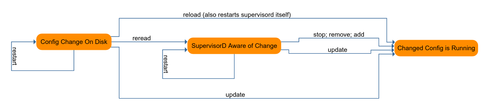
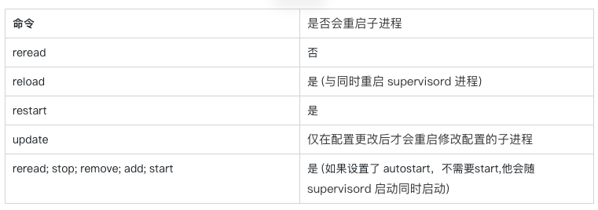
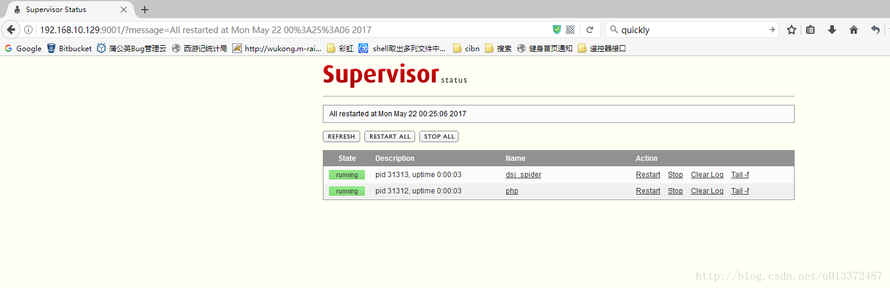

Supervisor是一个进程监控程序。可以查看进程执行状态, 启动异常终止的进程。
我现在有一个进程需要每时每刻不断的跑，但是这个进程又有可能由于各种原因有可能中断。当进程中断的时候我希望能自动重新启动它，此时，我就需要使用到了Supervisor，相当于将一个普通后台变成了守护进程；
有一个脚本需要自定义时间执行（实现想什么时候执行就点一下执行按钮的效果），可以打开Supervisor web页点击执行。
apt-get install supervisor#安装setuptools
yum install python-setuptools
#安装supervisor
easy_install supervisor
#测试安装是否成功：
echo_supervisord_conf
#上面语句若输出配置文件信息表示安装成功# 若没有配置文件，创建supervisor配置文件，注意先检查下有没有
# ubuntu
/etc/supervisor/supervisord.conf
有的系统是 /etc/supervisord.conf
# 创建配置文件
echo_supervisord_conf > /etc/supervisor/supervisord.conf supervisord.conf
[include]
files = /etc/supervisor/conf.d/*.conf/etc/supervisor/conf.d/v2.conf
[program:v2_queue] ;进程名
command = /usr/local/php/bin/php /alidata/www/v2/current/artisan queue:work --sleep=3 --tries=3 ; 进程对应的命令
process_name = %(program_name)s_%(process_num)s
numprocs = 1 ; 启动子进程个数，如队列可以启动多个消费队列进程，根据实际需要设置
user=www ;设置执行用户，可以用来管理该listener进程。
autostart = true ;supervisor启动的时候是否随着同时启动
autorestart = true ;当程序退出的时候，这个program会自动重启
startsecs=1 ;程序重启时候停留在runing状态的秒数，设为1表示启动 1 秒后没有异常退出，就当作已经正常启动了
startretries=3 ;启动失败自动重试次数，默认是 3
stdout_logfile = /alidata/log/supervisor/v2_queue_out.log ; 输出日志
stdout_logfile_maxbytes = 10MB ; 输出日志文件最大大小
stderr_logfile = /alidata/log/supervisor/v2_queue_err.log ; 错误日志
stderr_logfile_maxbytes = 10MB ; 输出日志文件最大大小
redirect_stderr=false ; 把 stderr 重定向到 stdout，默认 false有的操作系统好像是 *.ini 来，这个要注意。
[unix_http_server]
file=/tmp/supervisor.sock ; socket文件的路径，supervisorctl用XML_RPC和supervisord通信就是通过它进行
的。如果不设置的话，supervisorctl也就不能用了
不设置的话，默认为none。 非必须设置
;chmod=0700 ; 这个简单，就是修改上面的那个socket文件的权限为0700
不设置的话，默认为0700。 非必须设置
;chown=nobody:nogroup ; 这个一样，修改上面的那个socket文件的属组为user.group
不设置的话，默认为启动supervisord进程的用户及属组。非必须设置
;username=user ; 使用supervisorctl连接的时候，认证的用户
不设置的话，默认为不需要用户。 非必须设置
;password=123 ; 和上面的用户名对应的密码，可以直接使用明码，也可以使用SHA加密
如：{SHA}82ab876d1387bfafe46cc1c8a2ef074eae50cb1d
默认不设置。。。非必须设置
;[inet_http_server] ; 侦听在TCP上的socket，Web Server和远程的supervisorctl都要用到他
不设置的话，默认为不开启。非必须设置
;port=127.0.0.1:9001 ; 这个是侦听的IP和端口，侦听所有IP用 :9001或*:9001。
这个必须设置，只要上面的[inet_http_server]开启了，就必须设置它
;username=user ; 这个和上面的uinx_http_server一个样。非必须设置
;password=123 ; 这个也一个样。非必须设置
[supervisord] ;这个主要是定义supervisord这个服务端进程的一些参数的
这个必须设置，不设置，supervisor就不用干活了
logfile=/tmp/supervisord.log ; 这个是supervisord这个主进程的日志路径，注意和子进程的日志不搭嘎。
默认路径$CWD/supervisord.log，$CWD是当前目录。。非必须设置
logfile_maxbytes=50MB ; 这个是上面那个日志文件的最大的大小，当超过50M的时候，会生成一个新的日
志文件。当设置为0时，表示不限制文件大小
默认值是50M，非必须设置。
logfile_backups=10 ; 日志文件保持的数量，上面的日志文件大于50M时，就会生成一个新文件。文件
数量大于10时，最初的老文件被新文件覆盖，文件数量将保持为10
当设置为0时，表示不限制文件的数量。
默认情况下为10。。。非必须设置
loglevel=info ; 日志级别，有critical, error, warn, info, debug, trace, or blather等
默认为info。。。非必须设置项
pidfile=/tmp/supervisord.pid ; supervisord的pid文件路径。
默认为$CWD/supervisord.pid。。。非必须设置
nodaemon=false ; 如果是true，supervisord进程将在前台运行
默认为false，也就是后台以守护进程运行。。。非必须设置
minfds=1024 ; 这个是最少系统空闲的文件描述符，低于这个值supervisor将不会启动。
系统的文件描述符在这里设置cat /proc/sys/fs/file-max
默认情况下为1024。。。非必须设置
minprocs=200 ; 最小可用的进程描述符，低于这个值supervisor也将不会正常启动。
ulimit -u这个命令，可以查看linux下面用户的最大进程数
默认为200。。。非必须设置
;umask=022 ; 进程创建文件的掩码
默认为022。。非必须设置项
;user=chrism ; 这个参数可以设置一个非root用户，当我们以root用户启动supervisord之后。
我这里面设置的这个用户，也可以对supervisord进行管理
默认情况是不设置。。。非必须设置项
;identifier=supervisor ; 这个参数是supervisord的标识符，主要是给XML_RPC用的。当你有多个
supervisor的时候，而且想调用XML_RPC统一管理，就需要为每个
supervisor设置不同的标识符了
默认是supervisord。。。非必需设置
;directory=/tmp ; 这个参数是当supervisord作为守护进程运行的时候，设置这个参数的话，启动
supervisord进程之前，会先切换到这个目录
默认不设置。。。非必须设置
;nocleanup=true ; 这个参数当为false的时候，会在supervisord进程启动的时候，把以前子进程
产生的日志文件(路径为AUTO的情况下)清除掉。有时候咱们想要看历史日志，当
然不想日志被清除了。所以可以设置为true
默认是false，有调试需求的同学可以设置为true。。。非必须设置
;childlogdir=/tmp ; 当子进程日志路径为AUTO的时候，子进程日志文件的存放路径。
默认路径是这个东西，执行下面的这个命令看看就OK了，处理的东西就默认路径
python -c "import tempfile;print tempfile.gettempdir()"
非必须设置
;environment=KEY="value" ; 这个是用来设置环境变量的，supervisord在linux中启动默认继承了linux的
环境变量，在这里可以设置supervisord进程特有的其他环境变量。
supervisord启动子进程时，子进程会拷贝父进程的内存空间内容。 所以设置的
这些环境变量也会被子进程继承。
小例子：environment=name="haha",age="hehe"
默认为不设置。。。非必须设置
;strip_ansi=false ; 这个选项如果设置为true，会清除子进程日志中的所有ANSI 序列。什么是ANSI
序列呢？就是我们的\\\\\\\\\\\\\\\\\\\\\\\\\\\\\\\\n,\\\\\\\\\\\\\\\\\\\\\\\\\\\\\\\\t这些东西。
默认为false。。。非必须设置
; the below section must remain in the config file for RPC
; (supervisorctl/web interface) to work, additional interfaces may be
; added by defining them in separate rpcinterface: sections
[rpcinterface:supervisor] ;这个选项是给XML_RPC用的，当然你如果想使用supervisord或者web server 这
个选项必须要开启的
supervisor.rpcinterface_factory = supervisor.rpcinterface:make_main_rpcinterface
[supervisorctl] ;这个主要是针对supervisorctl的一些配置
serverurl=unix:///tmp/supervisor.sock ; 这个是supervisorctl本地连接supervisord的时候，本地UNIX socket
路径，注意这个是和前面的[unix_http_server]对应的
默认值就是unix:///tmp/supervisor.sock。。非必须设置
;serverurl=http://127.0.0.1:9001 ; 这个是supervisorctl远程连接supervisord的时候，用到的TCP socket路径
注意这个和前面的[inet_http_server]对应
默认就是http://127.0.0.1:9001。。。非必须项
;username=chris ; 用户名
默认空。。非必须设置
;password=123 ; 密码
默认空。。非必须设置
;prompt=mysupervisor ; 输入用户名密码时候的提示符
默认supervisor。。非必须设置
;history_file=~/.sc_history ; 这个参数和shell中的history类似，我们可以用上下键来查找前面执行过的命令
默认是no file的。。所以我们想要有这种功能，必须指定一个文件。。。非
必须设置
; 下面示例是创建子进程的配置
;[program:theprogramname] ;这个就是咱们要管理的子进程了，":"后面的是名字，最好别乱写和实际进程
有点关联最好。这样的program我们可以设置一个或多个，一个program就是
要被管理的一个进程
;command=/bin/cat ; 这个就是我们的要启动进程的命令路径了，可以带参数
例子：/home/test.py -a 'hehe'
有一点需要注意的是，我们的command只能是那种在终端运行的进程，不能是
守护进程。这个想想也知道了，比如说command=service httpd start。
httpd这个进程被linux的service管理了，我们的supervisor再去启动这个命令
这已经不是严格意义的子进程了。
这个是个必须设置的项
;process_name=%(program_name)s ; 这个是进程名，如果我们下面的numprocs参数为1的话，就不用管这个参数
了，它默认值%(program_name)s也就是上面的那个program冒号后面的名字，
但是如果numprocs为多个的话，那就不能这么干了。想想也知道，不可能每个
进程都用同一个进程名吧。
;numprocs=1 ; 启动进程的数目。当不为1时，就是进程池的概念，注意process_name的设置
默认为1 。。非必须设置
;directory=/tmp ; 进程运行前，会前切换到这个目录
默认不设置。。。非必须设置
;umask=022 ; 进程掩码，默认none，非必须
;priority=999 ; 子进程启动关闭优先级，优先级低的，最先启动，关闭的时候最后关闭
默认值为999 。。非必须设置
;autostart=true ; 如果是true的话，子进程将在supervisord启动后被自动启动
默认就是true 。。非必须设置
;autorestart=unexpected ; 这个是设置子进程挂掉后自动重启的情况，有三个选项，false,unexpected
和true。如果为false的时候，无论什么情况下，都不会被重新启动，
如果为unexpected，只有当进程的退出码不在下面的exitcodes里面定义的退
出码的时候，才会被自动重启。当为true的时候，只要子进程挂掉，将会被无
条件的重启
;startsecs=1 ; 这个选项是子进程启动多少秒之后，此时状态如果是running，则我们认为启
动成功了，默认值为1 。。非必须设置
;startretries=3 ; 当进程启动失败后，最大尝试启动的次数。。当超过3次后，supervisor将把
此进程的状态置为FAIL
默认值为3 。。非必须设置
;exitcodes=0,2 ; 注意和上面的的autorestart=unexpected对应。。exitcodes里面的定义的
退出码是expected的。
;stopsignal=QUIT ; 进程停止信号，可以为TERM, HUP, INT, QUIT, KILL, USR1, or USR2等信号
默认为TERM 。。当用设定的信号去干掉进程，退出码会被认为是expected
非必须设置
;stopwaitsecs=10 ; 这个是当我们向子进程发送stopsignal信号后，到系统返回信息
给supervisord，所等待的最大时间。 超过这个时间，supervisord会向该
子进程发送一个强制kill的信号。
默认为10秒。。非必须设置
;stopasgroup=false ; 这个东西主要用于，supervisord管理的子进程，这个子进程本身还有
子进程。那么我们如果仅仅干掉supervisord的子进程的话，子进程的子进程
有可能会变成孤儿进程。所以咱们可以设置可个选项，把整个该子进程的
整个进程组都干掉。 设置为true的话，一般killasgroup也会被设置为true。
需要注意的是，该选项发送的是stop信号
默认为false。。非必须设置。。
;killasgroup=false ; 这个和上面的stopasgroup类似，不过发送的是kill信号
;user=chrism ; 如果supervisord是root启动，我们在这里设置这个非root用户，可以用来
管理该program
默认不设置。。。非必须设置项
;redirect_stderr=true ; 如果为true，则stderr的日志会被写入stdout日志文件中
默认为false，非必须设置
;stdout_logfile=/a/path ; 子进程的stdout的日志路径，可以指定路径，AUTO，none等三个选项。
设置为none的话，将没有日志产生。设置为AUTO的话，将随机找一个地方
生成日志文件，而且当supervisord重新启动的时候，以前的日志文件会被
清空。当 redirect_stderr=true的时候，sterr也会写进这个日志文件
;stdout_logfile_maxbytes=1MB ; 日志文件最大大小，和[supervisord]中定义的一样。默认为50
;stdout_logfile_backups=10 ; 和[supervisord]定义的一样。默认10
;stdout_capture_maxbytes=1MB ; 这个东西是设定capture管道的大小，当值不为0的时候，子进程可以从stdout
发送信息，而supervisor可以根据信息，发送相应的event。
默认为0，为0的时候表达关闭管道。。。非必须项
;stdout_events_enabled=false ; 当设置为ture的时候，当子进程由stdout向文件描述符中写日志的时候，将
触发supervisord发送PROCESS_LOG_STDOUT类型的event
默认为false。。。非必须设置
;stderr_logfile=/a/path ; 这个东西是设置stderr写的日志路径，当redirect_stderr=true。这个就不用
设置了，设置了也是白搭。因为它会被写入stdout_logfile的同一个文件中
默认为AUTO，也就是随便找个地存，supervisord重启被清空。。非必须设置
;stderr_logfile_maxbytes=1MB ; 这个出现好几次了，就不重复了
;stderr_logfile_backups=10 ; 这个也是
;stderr_capture_maxbytes=1MB ; 这个一样，和stdout_capture一样。 默认为0，关闭状态
;stderr_events_enabled=false ; 这个也是一样，默认为false
;environment=A="1",B="2" ; 这个是该子进程的环境变量，和别的子进程是不共享的
;serverurl=AUTO ;
; The below sample eventlistener section shows all possible
; eventlistener subsection values, create one or more 'real'
; eventlistener: sections to be able to handle event notifications
; sent by supervisor.
;[eventlistener:theeventlistenername] ;这个东西其实和program的地位是一样的，也是suopervisor启动的子进
程，不过它干的活是订阅supervisord发送的event。他的名字就叫
listener了。我们可以在listener里面做一系列处理，比如报警等等
楼主这两天干的活，就是弄的这玩意
;command=/bin/eventlistener ; 这个和上面的program一样，表示listener的可执行文件的路径
;process_name=%(program_name)s ; 这个也一样，进程名，当下面的numprocs为多个的时候，才需要。否则默认就
OK了
;numprocs=1 ; 相同的listener启动的个数
;events=EVENT ; event事件的类型，也就是说，只有写在这个地方的事件类型。才会被发送
;buffer_size=10 ; 这个是event队列缓存大小，单位不太清楚，楼主猜测应该是个吧。当buffer
超过10的时候，最旧的event将会被清除，并把新的event放进去。
默认值为10。。非必须选项
;directory=/tmp ; 进程执行前，会切换到这个目录下执行
默认为不切换。。。非必须
;umask=022 ; 淹没，默认为none，不说了
;priority=-1 ; 启动优先级，默认-1，也不扯了
;autostart=true ; 是否随supervisord启动一起启动，默认true
;autorestart=unexpected ; 是否自动重启，和program一个样，分true,false,unexpected等，注意
unexpected和exitcodes的关系
;startsecs=1 ; 也是一样，进程启动后跑了几秒钟，才被认定为成功启动，默认1
;startretries=3 ; 失败最大尝试次数，默认3
;exitcodes=0,2 ; 期望或者说预料中的进程退出码，
;stopsignal=QUIT ; 干掉进程的信号，默认为TERM，比如设置为QUIT，那么如果QUIT来干这个进程
那么会被认为是正常维护，退出码也被认为是expected中的
;stopwaitsecs=10 ; max num secs to wait b4 SIGKILL (default 10)
;stopasgroup=false ; send stop signal to the UNIX process group (default false)
;killasgroup=false ; SIGKILL the UNIX process group (def false)
;user=chrism ;设置普通用户，可以用来管理该listener进程。
默认为空。。非必须设置
;redirect_stderr=true ; 为true的话，stderr的log会并入stdout的log里面
默认为false。。。非必须设置
;stdout_logfile=/a/path ; 这个不说了，好几遍了
;stdout_logfile_maxbytes=1MB ; 这个也是
;stdout_logfile_backups=10 ; 这个也是
;stdout_events_enabled=false ; 这个其实是错的，listener是不能发送event
;stderr_logfile=/a/path ; 这个也是
;stderr_logfile_maxbytes=1MB ; 这个也是
;stderr_logfile_backups ; 这个不说了
;stderr_events_enabled=false ; 这个也是错的，listener不能发送event
;environment=A="1",B="2" ; 这个是该子进程的环境变量
默认为空。。。非必须设置
;serverurl=AUTO ; override serverurl computation (childutils)
; The below sample group section shows all possible group values,
; create one or more 'real' group: sections to create "heterogeneous"
; process groups.
;[group:thegroupname] ;这个东西就是给programs分组，划分到组里面的program。我们就不用一个一个去操作了
我们可以对组名进行统一的操作。 注意：program被划分到组里面之后，就相当于原来
的配置从supervisor的配置文件里消失了。。。supervisor只会对组进行管理，而不再
会对组里面的单个program进行管理了
;programs=progname1,progname2 ; 组成员，用逗号分开
这个是个必须的设置项
;priority=999 ; 优先级，相对于组和组之间说的
默认999。。非必须选项
; The [include] section can just contain the "files" setting. This
; setting can list multiple files (separated by whitespace or
; newlines). It can also contain wildcards. The filenames are
; interpreted as relative to this file. Included files *cannot*
; include files themselves.
;[include] ;这个东西挺有用的，当我们要管理的进程很多的时候，写在一个文件里面
就有点大了。我们可以把配置信息写到多个文件中，然后include过来
;files = relative/directory/*.ini
# supervisord服务启动
supervisord -c /etc/supervisord.conf
# 不重启supervisord服务的情况下更新配置文件，会同步重启配置修改过的子进程
sudo supervisorctl update
#supervisor 服务客户端管理命令
supervisorctl
# 重新启动配置中的所有程序， 并同时重启 supervisord 服务，这个重启挺慢的，一般不建议用
sudo supervisorctl reload
# 终止配置中的所有子进程
sudo supervisorctl stop all
# 启动配置中的所有子进程
sudo supervisorctl start all
# 重启配置中所有子程序
sudo supervisorctl restart all
# 启动配置中的某个子进程
sudo supervisorctl start queue_dispose:*
# supervisorctl 执行有时会报错找不到 supervisord.conf 文件，可使用 -c 参数指定
sudo supervisorctl -c /etc/supervisor/supervisord.conf status
sudo supervisorctl -c /etc/supervisor/supervisord.conf stop webWeiXinLoginList:webWeiXinLoginList_0

在生产环境修改代码后重启进程，建议使用restart, 不要用 reload, 这个会同时重启 supervisord， 导致进程重启很慢。
注意：
1、每次修改配置文件后需进入supervisorctl，执行 update ， 改动部分才能生效
2、Supervisor主要有两个命令:
supervisord : 启动supervisor的服务器端
supervisorctl：启动supervisor的命令行窗口，在该命令行中可执行start、stop、status、reload等操作。
3、php脚本执行报'BACKOFF Exited too quickly (process log may have details)'错误解决:
对于执行时间很短的php脚本(执行时间小于配置的 startsecs)，点击进程执行会报以上错误。
<?php
require 'db.class.php';
$dbHost = 'localhost';
$dbUser = 'xxxxxx';
$dbPasswd = 'xxxxxx';
$dbName = 'test';
$pdo = db::getInstance($dbHost, $dbUser, $dbPasswd, $dbName);
$pdo->insert('test', ['name' => 'wml']);
sleep(2); #在php脚本最后一行加上一句，可解决该问题supervisor提供web管理页面，可以在网页端对进程进行监控，启动，终止，重启等操作
将supervisord.conf中 inet_http_server 部分做相应配置，在supervisorctl中reload即可启动web管理界面
[inet_http_server] ; inet (TCP) server disabled by default
port=192.168.10.129:9001 ; 外网ip(ip_address:port specifier, *:port for all iface)
username=xxxxxxx ; (default is no username (open server))
password=xxxxxxx ; (default is no password (open server))在浏览器打开网址192.168.10.129:9001，输入上面账号xxxxxxx密码xxxxxxx，即可进入web管理页面：

1. 单机监控
2. 只能从supervisor启动的程序才能监控，从其他地方启动的无法监控
3. 需要指出的是，被 Supervisor 管理的进程，不能使用 daemon 模式，而必须在前台运行，否则会报错。
有时会遇到如一个进程监听到200个长连接后新的连接就连不上了，这是因为supervisor进程描述符的限制。
supervisor进程描述符默认为200，对于管理需要更多进程描述符的子进程一定要修改配置文件
/etc/supervisor/supervisord.conf, 在[supervisord]下面添加minfds=102400（改大即可）。
可以使用阿里云监控 supervisord 进程， supervisord进程再监控各子进程
其他监控工具如 monit ，功能更加强大。等以后研究
@搜索词：sup，super